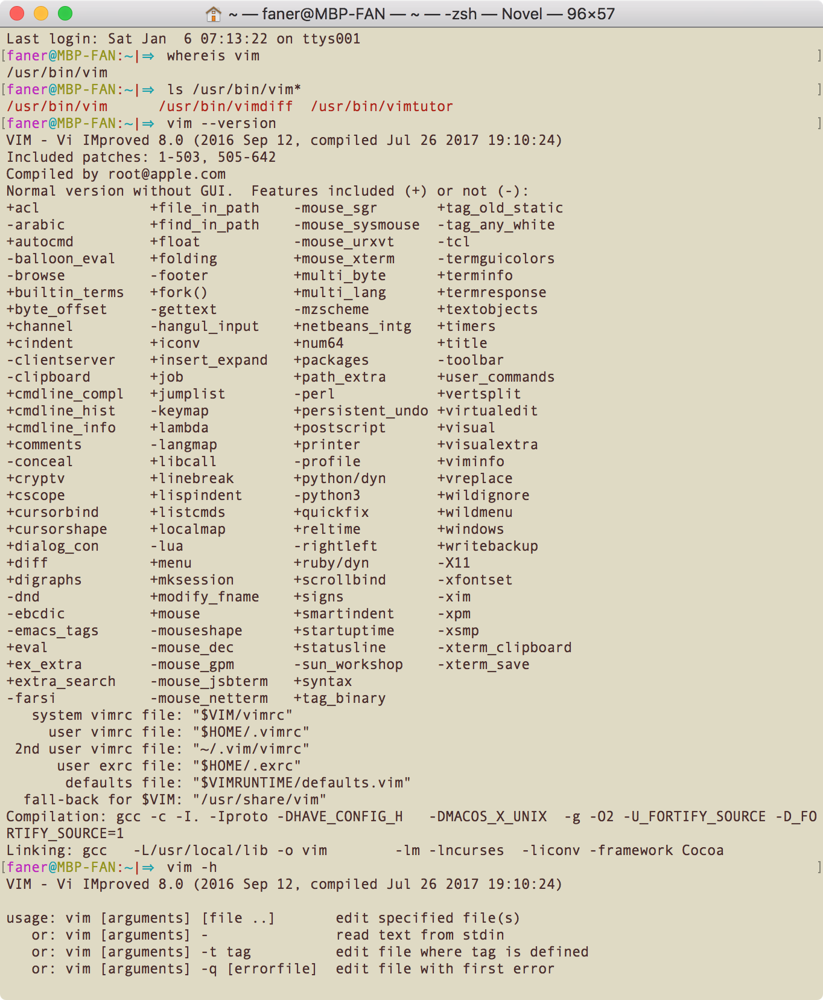

vim初识
本文梳理了 vim 的配置文件及环境变量以及使用 vim 打开文件和编辑文件的基础操作。
Where is vim（on macOS）#
faner@MBP-FAN:~|⇒ whereis vim
/usr/bin/vim
faner@MBP-FAN:~|⇒ ls /usr/bin/vim*
/usr/bin/vim /usr/bin/vimdiff /usr/bin/vimtutor
vim version#
vim 一共有五种版本
| 缩写 | 全称 |
|---|---|
| T | tiny |
| S | small |
| N | normal |
| B | big |
| H | huge |
# macOS
faner@MBP-FAN:~|⇒ vim --version
VIM - Vi IMproved 8.0 (2016 Sep 12, compiled Jul 26 2017 19:10:24)
Included patches: 1-503, 505-642
Compiled by root@apple.com
Normal version without GUI. Features included (+) or not (-):
在 vim 编辑模式下，底行模式输入
:version也可查看 vim 版本信息。
macOS 默认安装的版本是 normal version，后面列出了包含（+）和未包含（-）的features。

因为 vim 中有些插件会使用 python 和 ruby，我们可以编译升级 Mac 上的 vim 到7.4 huge版，启用 python 和 ruby 的支持特性。
raspbian 和 CentOS 默认安装的 Huge 版本。
# raspbian
pi@raspberrypi:~ $ vim --version
VIM - Vi IMproved 8.0 (2016 Sep 12, compiled Sep 30 2017 18:21:38)
Included patches: 1-197, 322, 377-378, 550, 703, 706-707
Modified by pkg-vim-maintainers@lists.alioth.debian.org
Compiled by pkg-vim-maintainers@lists.alioth.debian.org
Huge version without GUI. Features included (+) or not (-):
配置文件及环境变量#
vim --version 结尾部分给出了配置文件的路径：
# macOS/raspbian
system vimrc file: "$VIM/vimrc"
user vimrc file: "$HOME/.vimrc"
2nd user vimrc file: "~/.vim/vimrc"
user exrc file: "$HOME/.exrc"
defaults file: "$VIMRUNTIME/defaults.vim"
fall-back for $VIM: "/usr/share/vim"
- fall-back：编译时指定的安装路径，即
$VIM=/usr/share/vim； - 系统级别的 vim 配置文件：
$VIM/vimrc； - 用户级别首选 vim 配置文件：
$HOME/.vimrc； - 用户级别可选 vim 配置文件：
~/.vim/vimrc； - 用户级别 ex 配置文件：
$HOME/.exrc； - vim 默认配置文件：
$VIMRUNTIME/defaults.vim
配置文件（vimrc）#
说明文档 /usr/share/vim/vim[0-9][0-9]/doc/usr_05.txt 中有关于 vimrc 文件格式说明及配置范例可供参考：
- |05.1| The vimrc file -
:h vimrc-intro - |05.2| The example vimrc file explained :
:h vimrc_example.vim
说明文档 /usr/share/vim/vim[0-9][0-9]/doc/starting.txt 中的 4. Initialization（帮助关键词为 initialization, startup）章节中有关于启动加载配置文件（vimrc）的帮助说明。
:h vimrc：查看 vimrc 相关的帮助；
vim[0-9][0-9]：此处采用两位十进制数字通配符（wildcard）来代表动态发展的vim版本，因为vim版本是不断升级的，如 vim73、vim74、vim80。
环境变量（$VIM 和 $VIMRUNTIME）#
配置文件的路径中引用了 HOME 和 VIM 及 VIMRUNTIME 这三个环境变量。
HOME 即通常所说的当前用户家目录（~），VIM 可在 vim 编辑器底行模式下利用 echo 命令查看。
关于 $VIM 和 $VIMRUNTIME 相关的说明可参考 /usr/share/vim/vim[0-9][0-9]/doc/starting.txt 中的 4. Initialization（帮助关键词为 initialization, startup）。
:h $VIM：查看环境变量$VIM相关的说明；:h $VIMRUNTIME：查看环境变量$VIMRUNTIME相关的说明。
在终端输入 vim（vim doc）进入 vim 编辑器，然后按下 Q（<S-q>）进入 Ex 多行命令行模式，依次输入 echo $VIM 和 echo $VIMRUNTIME 即可检查 vim 环境变量。
# macOS or raspbian
Entering Ex mode. Type "visual" to go to Normal mode.
:echo $VIM
/usr/share/vim
:echo $VIMRUNTIME
/usr/share/vim/vim80
输入 visual 退出 Ex 模式，回到正常模式；或直接输入 q 退出 vim。
也可在 vim 底行模式输入
:! echo $VIM或:! echo $VIMRUNTIME打印这两个环境变量的值。
vim FILES#
# macOS
faner@MBP-FAN:/usr/share/vim|⇒ ls
vim80 vimrc
# raspbian
pi@raspberrypi:/usr/share/vim $ ls
addons registry vim80 vimfiles vimrc
FILES#
man vim 的 FILES 章节列举了 vim 配置及说明相关的主要文件：
# macOS 的 man pages 太过陈旧，以下摘自 raspbian 的最新 vim man page
FILES
/usr/share/vim/vim80/doc/*.txt
The Vim documentation files. Use ":help doc-file-list" to get the com‐
plete list.
/usr/share/vim/vim80/doc/tags
The tags file used for finding information in the documentation files.
/usr/share/vim/vim80/syntax/syntax.vim
System wide syntax initializations.
/usr/share/vim/vim80/syntax/*.vim
Syntax files for various languages.
/usr/share/vim/vimrc
System wide Vim initializations.
~/.vimrc Your personal Vim initializations.
/usr/share/vim/gvimrc
System wide gvim initializations.
~/.gvimrc Your personal gvim initializations.
/usr/share/vim/vim80/optwin.vim
Script used for the ":options" command, a nice way to view and set
options.
/usr/share/vim/vim80/menu.vim
System wide menu initializations for gvim.
/usr/share/vim/vim80/bugreport.vim
Script to generate a bug report. See ":help bugs".
/usr/share/vim/vim80/filetype.vim
Script to detect the type of a file by its name. See ":help 'file‐
type'".
/usr/share/vim/vim80/scripts.vim
Script to detect the type of a file by its contents. See ":help 'file‐
type'".
/usr/share/vim/vim80/print/*.ps
Files used for PostScript printing.
For recent info read the VIM home page:
<URL:http://www.vim.org/>
directories#
以下列举了 $VIMRUNTIME（vim80） 下的目录：
# ls -al | grep '^d'
faner@MBP-FAN:/usr/share/vim/vim80|⇒ ls -d */
autoload/ compiler/ ftplugin/ keymap/ macros/ plugin/ spell/ tools/
colors/ doc/ indent/ lang/ pack/ print/ syntax/ tutor/
faner@MBP-FAN:/usr/share/vim/vim80|⇒ tree -d -L 1
.
├── autoload
├── colors
├── compiler
├── doc
├── ftplugin
├── indent
├── keymap
├── lang
├── macros
├── pack
├── plugin
├── print
├── spell
├── syntax
├── tools
└── tutor
16 directories
| 目录 | 作用 | 说明 |
|---|---|---|
| tutor | 入门教程 | vimtutor |
| doc | 帮助文档 | :help |
| colors | 配色方案 | :colorscheme |
| plugin | 插件目录 | Vim Script脚本格式 |
其中 *.vim 为 Vim Script 脚本格式文件，例如：
filetype: 文件类型检查
filetype.vim: detect file types
ftoff.vim: switch off detection of file typesftplugin: 文件类型检查插件
ftplugin.vim: switch on loading plugins for file types
ftplugof.vim: switch off loading plugins for file typesindent: 不同语言语法缩进
indent.vim: switch on loading indent files for file types
indoff.vim: switch off loading indent files for file typessyntax：不同语言语法高亮检测插件
syntax: c.vim / cpp.vim / objc.vim / objcpp.vim / markdown.vim
hi, vim#
vim 命令选项#
通常情況下，您可以打开终端，输入︰
vim tutor <回車>
這裡的 vim 表示進入vim編輯器的启动命令（start the Vim editor），而 tutor 則是您準備要編輯的文件（the file you wish to edit）。
执行 vim --help 可查看 vim 命令启动参数及选项：
faner@MBP-FAN:~|⇒ vim -h
VIM - Vi IMproved 8.0 (2016 Sep 12, compiled Jul 26 2017 19:10:24)
usage: vim [arguments] [file ..] edit specified file(s)
or: vim [arguments] - read text from stdin
or: vim [arguments] -t tag edit file where tag is defined
or: vim [arguments] -q [errorfile] edit file with first error
Arguments:
-- Only file names after this
-v Vi mode (like "vi")
-e Ex mode (like "ex")
-E Improved Ex mode
-s Silent (batch) mode (only for "ex")
-d Diff mode (like "vimdiff")
-y Easy mode (like "evim", modeless)
-R Readonly mode (like "view")
-Z Restricted mode (like "rvim")
-m Modifications (writing files) not allowed
-M Modifications in text not allowed
-b Binary mode
-l Lisp mode
-C Compatible with Vi: 'compatible'
-N Not fully Vi compatible: 'nocompatible'
-V[N][fname] Be verbose [level N] [log messages to fname]
-D Debugging mode
-n No swap file, use memory only
-r List swap files and exit
-r (with file name) Recover crashed session
-L Same as -r
-T <terminal> Set terminal type to <terminal>
--not-a-term Skip warning for input/output not being a terminal
--ttyfail Exit if input or output is not a terminal
-u <vimrc> Use <vimrc> instead of any .vimrc
--noplugin Don't load plugin scripts
-p[N] Open N tab pages (default: one for each file)
-o[N] Open N windows (default: one for each file)
-O[N] Like -o but split vertically
+ Start at end of file
+<lnum> Start at line <lnum>
--cmd <command> Execute <command> before loading any vimrc file
-c <command> Execute <command> after loading the first file
-S <session> Source file <session> after loading the first file
-s <scriptin> Read Normal mode commands from file <scriptin>
-w <scriptout> Append all typed commands to file <scriptout>
-W <scriptout> Write all typed commands to file <scriptout>
-x Edit encrypted files
--startuptime <file> Write startup timing messages to <file>
-i <viminfo> Use <viminfo> instead of .viminfo
-h or --help Print Help (this message) and exit
--version Print version information and exit
vim 打开（新建）编辑#
- 打开终端，输入
vim hivim.txt（假设当前家目录下尚不存在 hivim.txt 文件），vim默认为普通模式（normal mode）。vim将为 New File（hivim.txt）新建一个 buffer，此时尚不存在文件~/hivim.txt。光标停留在第一行，下面的波浪线~表示空行。
> 输入 CTRL-G 或 :f / :fi / :file 可在底部查看当前打开文档的路径。 - 按键
i进入编辑模式（insert mode），输入hello world from vim!。 - 按下
esc键盘切回普通模式，输入:wq保存退出（write and quit）。 - 输入
cat hivim.txt1 查看刚才使用 vim 新建-编辑-保存 的文件。
➜ ~ cat hivim.txt
cat: hivim.txt: No such file or directory
➜ ~ vim hivim.txt
➜ ~ cat hivim.txt
hello world from vim!
➜ ~
write#
使用 vim 打开 \<vimfile> 进行编辑时，vim 会自动在当前文件路径下创建一个名为.<vimfile>.swp 的缓存副本（swap buffer），最终需要调用 :w（:write）命令将副本中的编辑（diff）写入（patch）文件保存。
调用 vim 命令打开文件时，可以指定 -n 选项，此时无需创建swp文件，直接在内存中针对源文件编辑保存。
调用 vim -r 或 :! vim -r 命令可以列举查看当前所有的 swap files。
vim 打开阅读#
只读，可强制编辑，可强制写入（-R）#
vim -R 以只读方式打开 /usr/share/vim/vim[0-9][0-9]/tutor/tutor.utf-8：
当 vim 以只读方式打开文件时：
- 若尝试通过
i、a、o进入编辑模式，会提示：
> Warning: Changing a readonly file - 编辑后，若尝试通过
:q退出，会提示：
> No write since last change (add ! to override) - 编辑后，若尝试通过
:w保存，会提示：
> 'readonly' option is set (add ! to override)
但是，还是可以通过 :wq! 强制写入保存退出。
可编辑，不可强制写入（-m）#
在使用 vim 打开文档时，若想针对缓冲副本（*.swp 文件）进行编辑，以便边学习边实践，但禁止最终写入保存，可以 -m 选项执行 vim 命令。
若尝试通过 :w 写入文件，会提示：
File not written: Writing is disabled by 'write' option
例如，以下通过 vim -m 命令对照阅读英文版 vimtutor（tutor.utf-8），可边阅读边实践：
只读，不可编辑，不可强制写入（-M）#
如果仅仅使用 vim 打开文档进行阅读（类似 less 命令），不可编辑也不可写入，则可以 -M 选项执行 vim 命令。
若尝试通过 i、a、o 进入编辑模式，会提示：
Cannot make changes, 'modifiable' is off
例如，以下通过 vim -M 命令以只读方式（不可编辑）对照阅读英文版vimtutor（tutor.utf-8）：